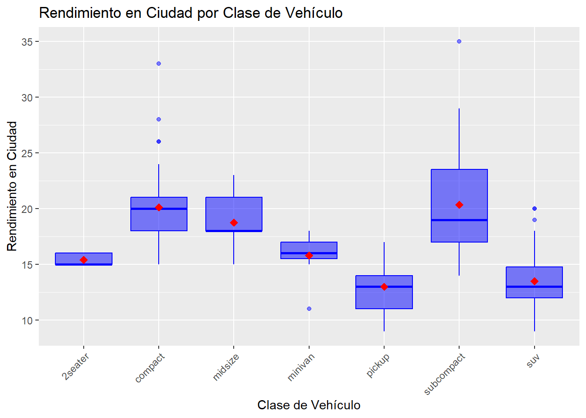

Este es el repositorio de GitHub en el que se encuentran todos los archivos relacionados con esta entrega.
library(tidyverse)
── Attaching core tidyverse packages ──────────────────────── tidyverse 2.0.0 ──
✔ dplyr 1.1.2 ✔ readr 2.1.4
✔ forcats 1.0.0 ✔ stringr 1.5.0
✔ ggplot2 3.4.2 ✔ tibble 3.2.1
✔ lubridate 1.9.2 ✔ tidyr 1.3.0
✔ purrr 1.0.1
── Conflicts ────────────────────────────────────────── tidyverse_conflicts() ──
✖ dplyr::filter() masks stats::filter()
✖ dplyr::lag() masks stats::lag()
ℹ Use the conflicted package (<http://conflicted.r-lib.org/>) to force all conflicts to become errors
library(ggplot2)
1) Dibujad un gráfico que permita visualizar el número de vehículos de cada fabricante del conjunto de datos.
# Crear el gráfico de barras:ggplot(data = mpg, aes(x = manufacturer)) +geom_bar() +labs(title ="Coches por Fabricante",x ="Fabricante",y ="Cantidad de Coches" ) +theme(axis.text.x =element_text(angle =45, hjust =1))
2) Dibujad un gráfico para mostrar el rendimiento medio en ciudad para cada clase.
Crearemos un nuevo dataframe con el rendimiento medio en ciudad para cada clase de vehículo. Si pegamos un primer vistazo a la variable clase observamos que tenemos las siguientes clases de vehículos (según si son de 2 plazas, compactos, suv, camionetas u otros).
# Contamos la cantidad de valores distintos que toma la variable class.mpg %>%count(class)
# A tibble: 7 × 2
class n
<chr> <int>
1 2seater 5
2 compact 47
3 midsize 41
4 minivan 11
5 pickup 33
6 subcompact 35
7 suv 62
A continuación agruparemos las entradas del dataset inicial según la clase de vehículo y calcularemos el rendimiento medio por tipo de vehículo.
mpg_class_avg <- mpg %>%group_by(class) %>%# Agrupamos por clase y hacemos la media de éstos.summarize(avg_city_mpg =mean(cty))mpg_class_avg
Finalmente hacemos la gráfica para ilustrar los datos obtenidos:
# Gráfico de barrasggplot(data = mpg_class_avg, aes(x =reorder(class, -avg_city_mpg), y = avg_city_mpg)) +geom_bar(stat ="identity") +labs(title ="Rendimiento Promedio en Ciudad por Tipo de Vehículo",x ="Tipo de Vehículo",y ="Millas recorridas por galón de combustible" ) +theme(axis.text.x =element_text(angle =45, hjust =1))

3) Construid un gráfico para mostrar el rendimiento medio en ciudad para cada clase y tipo de tracción simultáneamente.
# Calculamos el rendimiento medio en ciudad por clase de vehículo y tipo de tracción:mpg %>%group_by(class, drv) %>%# Agrupamos teniendo en cuenta ambas característicassummarise(avg_city_mpg =mean(cty)) %>%# Representamos los datos:ggplot(aes(x = class, y = avg_city_mpg, fill = drv)) +geom_bar(stat ="identity") +labs(title ="Rendimiento Promedio en Ciudad por Clase y Tipo de Tracción",x ="Clase de Vehículo",y ="Rendimiento Promedio en Ciudad" ) +theme(axis.text.x =element_text(angle =45, hjust =1))
`summarise()` has grouped output by 'class'. You can override using the
`.groups` argument.
4) Utilizad un gráfico para mostrar la relación entre el tamaño del motor y el rendimiento en carretera, para cada clase de vehículo. ¿Qué podéis observar?
5) Comparad la distribución del rendimiento en ciudad para distintos tipos de tracción